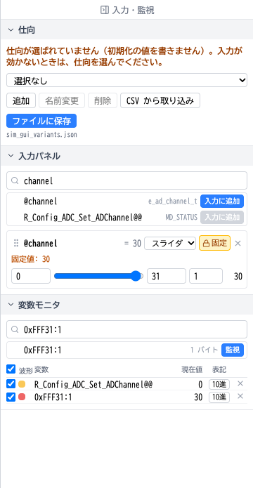
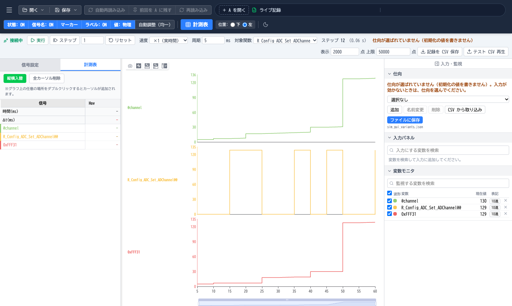

これは何か
RL78 向け組み込みソフトの機械語を、PC の上で 1 命令ずつ実行します。WinAMS で使っているロードモジュールとテスト CSV がそのまま使えるので、準備は「ファイルを置いてコマンドを打つ」だけです。
バッチ実行（sim run）
WinAMS のテスト CSV を読み、同じ書式の結果 CSV を出します。最後に OK / NG / NO Check の件数と速さを表示します。
GUI 実行（sim gui）
ブラウザの画面で入力信号を変えながら、結果を波形でリアルタイムに見ます。記録は WinAMS 形式の CSV で保存できます。
実機と同じ動き
機械語をそのまま解釈実行するので、int 16 ビット、ポインタ幅、SFR のアドレス、アセンブラで書かれた処理も実機と同じに動きます。
全体の流れ
仕様の詳細は docs/DESIGN.md、テキスト版の説明は README.md にあります。
用意するもの
WinAMS で使っているものが、そのまま使えます。新しく用意するのは sim.exe だけです。
- WinAMS に読み込ませている CC-RL の
.absまたは CA78K0R の.lmf— テストドライバとスタブを含めて CS+ でビルドしたもの。デバッグ情報つき。 - WinAMS 用のテスト CSV — 今あるものをそのまま使います。
sim.exe— 次の 3 つのどれかで手に入れます。
# GitHub の Actions の実行結果から、成果物 sim-windows-x64 をダウンロードして展開する sim-windows-x64/ sim.exe # 本体 sim_gui.html # GUI の画面（sim gui が使う） xlate/ # 速い実行方式（exec = xlate）が使う sim.cfg.example # sim.cfg の見本
# CI を使えないときのために、手元でビルドして置いたもの。フォルダごと取り出して使う dist/sim-windows-x64/ # ビルド元のコミットと確認の範囲は dist/README.md に書いてある
# Windows: MinGW-w64 の gcc を PATH に入れてから > set CC=gcc > build.bat # build\sim\sim.exe ができる # macOS / Linux（CMake、Python、Node は使わない） $ ./build.sh # build/sim/sim ができる
ビルドについての補足 コンパイラと速さ
Windows の配布物は、速さを優先して MinGW-w64 の gcc でビルドします（gcc のランタイムは静的リンク）。GitHub のランナーの遅い機種で、コア単体のベンチマークは clang が 272、gcc が 350 百万命令/秒です（速い機種ではほぼ同じ）。
どちらのビルドにも -O2 -fno-unroll-loops を付けます（速度 を参照）。
LLVM の clang でもビルドできます。CC を設定しないときの既定は、従来どおり clang です（MSVC の C ランタイムと Windows SDK も要ります）。
はじめての実行
3 つのコマンドで、読み込めるかを確かめ、変数の名前を調べ、テストを実行します。下の出力は、リポジトリに同梱のルネサス公式サンプル（RL78/G22 の A/D 変換、tests/fixtures/renesas/g22_adc）で実際に動かしたものです。
ファイルを並べる
ロードモジュールとテスト CSV を、同じフォルダの近くに置きます。sim.cfg は、ロードモジュールと同じフォルダに置くと自動で読みます（最初はなくてかまいません）。
my_test/
DefaultBuild/
project.abs # CS+ でビルドしたロードモジュール（.lmf でもよい）
sim.cfg # 設定（任意）
test.csv # WinAMS のテスト CSV読み込めるかを確かめる — sim info
ロードモジュールを読み、main まで（スタートアップを）走らせて、結果と警告を表示します。「初期設定終了: main」の行が出れば準備は完了です。
> sim info --abs DefaultBuild\project.abs -v バックエンド: rl78 ファイル: DefaultBuild/project.abs ファイル種類: ELF、ABI: ccrl ← .abs か .lmf かを自動で見分け、呼び出し規約（ABI）を選ぶ 設定ファイル: なし ← 読んだ sim.cfg（なければ「なし」） DWARF: CU 14 個（バージョン 2: 3、バージョン 3: 11）、飛ばした CU 0 個、Renesas Electronics CC-RL Compiler コア: auto（S3 の命令 + 乗除算器 SFR）、HALT: 読み飛ばす、STOP: 読み飛ばす RAM: 0xFEF00〜0xFFEDF、スタック: 0xFEF02〜0xFFE1F、呼び出し時の SP: 0xFFE1C 初期設定終了: main（0x00144）。スタートアップ 14403017 命令、16803549 クロック（525.111 ms @ 32000000 Hz） 実行方式: 解釈実行（exec = interp） スタブ: なし …（セクションの一覧など） 変数: 3 個、関数: 31 個
--abs は .lmf も受け付けます（project.abs を project.lmf に置き換えるだけ）。種類はファイルの先頭で判定し、ABI を自動で選びます。止まってしまうときは 困ったとき を見てください。
変数と関数の名前を調べる — sim list
テスト CSV の列に書く名前を確かめます。名前の一部を付けると、それを含むものだけに絞り込みます。
> sim list --abs DefaultBuild\project.abs ADChannel func 0x001DF R_Config_ADC_Set_ADChannel(e_ad_channel_t channel) -> MD_STATUS [src\smc_gen\Config_ADC\Config_ADC.c] > sim list --abs DefaultBuild\project.abs g_ var 0xFEF00 g_result_buffer uint16_t [main.c] var 0x02000 g_fih_hz const uint32_t[16] (const) [src\smc_gen\r_bsp\mcu\rl78_g22\mcu_clocks.c] var 0x02040 g_fim_hz const uint32_t[4] (const) [src\smc_gen\r_bsp\mcu\rl78_g22\mcu_clocks.c]
テストを実行する — sim run
結果 CSV を result フォルダに、入力と同じ名前で作ります。最後に件数（OK / NG / NO Check）と、実行した命令数・所要時間・命令/秒を表示します。
> sim run --abs DefaultBuild\project.abs test.csv -o result test.csv mod R_Config_ADC_Set_ADChannel: 総数 12, OK 12, NG 0, NO Check 0 -> result/test.csv 合計: 総数 12, OK 12, NG 0, NO Check 0 実行時間: 0.000 秒（対象関数 0.000 秒） 実行命令数: 265（スタートアップ 14403017 を除く）、呼び出し 12 回、所要時間 0.000 秒、53.0 百万命令/秒
結果を見る
結果 CSV は、入力の CSV の右に判定と実行時間を足したものです。期待値と違うセルは 実測?(期待) になります。下は、わざと期待値を 1 つ間違えた CSV を実行した例です。
> sim run --abs DefaultBuild\project.abs ng.csv -o result ng.csv NG ng.csv:4 0xFFF31 = 7（期待 8） ← どのファイルの何行目の、どの列かが分かる mod R_Config_ADC_Set_ADChannel: 総数 12, OK 11, NG 1, NO Check 0 -> result/ng.csv 合計: 総数 12, OK 11, NG 1, NO Check 0
| mod | R_Config_ADC_Set_ADChannel | A/D チャネルの設定 | 1 | 2 | ← 対象関数、入力 1 列、出力 2 列 |
| #COMMENT | @channel | R_Config_ADC_Set_ADChannel@@ | 0xFFF31 | 判定 | 実行時間 |
| 5 | 0 | 5 | OK | 0.0011ms | |
| 7 | 0 | 7?(8) | NG | 0.0011ms | |
| ; | 8〜17 は範囲外（MD_ARGERROR = 0x81）。ADS (0xFFF31) は変わらない | ||||
| 8 | 0x81 | 7 | OK | 0.0006ms | |
終了コード
すべて OK（NG なし）。
NG が 1 つでもあった。
実行できないエラー（ファイルが読めない、設定の値が読めない、など）。
複数の入力の出力先が同じ名前になる（ASCII の大小文字の違いや、同じ入力の重複を含む）ときは、何も実行・出力せずにエラー 2 で止まります。別々に実行するか、出力フォルダを分けてください。
結果の出力先が入力の CSV そのもの（
./ や相対パスなど、書き方が違っても同じファイル）になるときも、上書きせずにエラー 2 で止まります。テスト CSV と結果 CSV
WinAMS の書式をそのまま使います。1 行が対象関数 1 回の呼び出しで、変数の値は行をまたいで保持されます。
| mod | func1 | func1単体テスト | 3 | 2 | ← mod,対象関数,説明,入力の列数,出力の列数 | |
| #COMMENT | @enable | @mode | @input | gb_result.data | gb_result.ret_code | ← 列の名前（入力が先、出力が後） |
| ; | 自由なコメント | ← ; で始まる行はコメント | ||||
| 1 | 1 | 10 | 100 | 1 | ← データ行（1 列目はコメント欄） | |
列に書ける名前
| 書き方 | 意味 |
|---|---|
g_value | グローバル変数 |
file.c/name | ファイル内 static の変数 |
file.c/func@name | 関数内 static の変数 |
@引数 | 対象関数の引数（例: @channel） |
func@@ | 対象関数の戻り値 |
a.b a[2] p[0].m | 構造体のメンバ、配列の要素、ポインタの先 |
$ptr | ポインタの指す実体を確保する |
&arr / *ptr | まとめて書く・比べる（'文字列' や 1|2|3） |
0xFFF01:2 | アドレスを直接指定（: の後はバイト数） |
値の決まり
- 結果 CSV: 出力のセルに実測値を書き、期待値と違えば
実測?(期待)。右に判定（OK/NG/NO Check）と実行時間を足します。 - 空のセル: 入力の空セルは「設定しない」、出力の空セルは「期待値なし」。空文字列
''は、入力なら書く（終端の 0）、出力なら比べる（空文字列か）。 - 期待値は入力と同じ規則で解釈し、対象のビット幅に収まらない期待値は
NGにします。 - 文字コード（Shift_JIS / UTF-8。UTF-8 の BOM 付きも可）と改行コードは、入力のまま保ちます。UTF-16 は対応外（エラー）です。
- 日本語のフォルダ名・ファイル名を使えます（Windows でも。コマンドラインの引数と
sim.cfgの中のパスのどちらも可。sim.cfgは UTF-8 でも Shift_JIS でもよい）。 mod行がないファイルはエラー（終了コード 2）、実行するデータ行が 0 行のブロックは警告です。mod/#COMMENTの大文字小文字・前後の空白・"mod"のような引用は受け付けます（詳しくはdocs/DESIGN.mdの 3 節）。
結果 CSV は、入力として読み直せます。WinAMS の結果 CSV を入力にして
--expect-actual を付けると、WinAMS の実測値を期待値として、このシミュレータの結果と比べられます。最初はこれで、WinAMS と同じ結果になることを確かめてください。> sim run --abs DefaultBuild\project.abs winams_result\test.csv -o compare --expect-actual
modi — 初期化つきのブロック
#InitWheneverCall,変数名,... と次の初期値の行（先頭のセルはコメント欄）の後に、#COMMENT と通常のデータ行を置きます。
csv_init = auto | once | every（既定 auto）か、CLI の --csv-init=... で、初期化する時機を選べます。auto は、#InitWheneverCall なら毎行、それ以外の #Init... なら最初の行の前だけです。
書き込みの順は 初期値 → 行の入力 → 関数の呼び出し で、空の初期値は書き込みません。GUI の再生は初期化を独立した入力列へ展開して記録するので、保存した mod の CSV を sim run で再実行しても順序を再現します。
% 行 — WinAMS のスタブへの置換
%,スタブ関数,元の関数（例: %,"AMSTB_read_adc","read_adc"）の行は、WinAMS が書く置換（スタブ）の指定です。mod / modi の行から最初のデータ行までの間（#COMMENT の前でも後でも可）に置けます。
そのブロックを実行する間だけ元の関数をスタブへ置き換え、ブロックが終われば解除します。sim.cfg の stub / skip と同じ関数なら % 行を優先します。
関数は ファイル名/関数名（例: %,"AMSTB_xx","XXX.c/xx"）でも書けます。ファイル名の大文字小文字は区別しません。関数がロードモジュールに見つからなければ、そのブロックはエラーにして実行しません。
GUI で読み込んだ CSV の % 行も同じく有効になり、保存する CSV に書き出します。
GUI で動かす
周期関数を決まった間隔で呼び続け、入力を変えたときの変化を波形で見ます。まずは 30 秒の動画で流れをつかんでください。
> sim gui --abs DefaultBuild\project.abs --func <周期関数> --period-ms 5 sim gui: http://127.0.0.1:8765/ で待ち受けています（周期 5 ms、関数 R_Config_ADC_Set_ADChannel）。止めるには Ctrl+C
既定のブラウザ（Chrome / Edge）で画面が開きます。1 周期ごとに、指定した関数を 1 回呼びます。対象関数が決まっていない間は、実行・ステップと、記録していない CSV の保存はできません。画面で対象関数を選ぶか、--func で指定してください。
チャネル（@channel）を 8〜17 にすると戻り値が 0x81（範囲外）になり、ADS レジスタ（0xFFF31）は前の値のまま変わらないことが、波形で分かります。
動画と同じことを、手順で

- 入力パネルの検索欄に変数の名前（の一部）を入れ、「入力に追加」を押します。引数は
@channelのように@付きで出ます。 - 入力の形を数値・スライダ・トグル・ボタン・状態から選びます。スライダなら、左右の欄で下限と上限を決めます。
- 変数モニタの検索欄で、見たい変数・戻り値（
関数名@@）・番地（0xFFF31:1）を探し、「監視」を押します。チェックの付いたものが波形に出ます。 - 上の 「実行」 を押すと周期実行が始まります。入力を変えると、次の周期から波形に表れます。
- 「一時停止」すると、全区間をズームやカーソルで調べられます。「記録を CSV 保存」で WinAMS 形式の CSV に保存できます。
テスト CSV を再生する
右上の 「テスト CSV 再生」 でテスト CSV を選ぶと、その入力を順に書きながら実行し、波形にします。下は、上の test.csv を再生したところです。

画面の各部
実行の操作と入力パネル
- 実行 / 一時停止 / ステップ実行 / リセット、速度の倍率。
- 入力パネル: 左のつまみをドラッグして並べ替え、順番を保存します。数値・スライダ・トグル・状態の新しい入力は、既定で固定 ON（最初に値を入れると毎周期書き、リセット後も維持）。ボタンと既存の固定の設定は従来どおりです。
- 波形の lsb・offset・単位（yaml を含む）を数値とスライダに当てはめ、物理値で入力・表示します。整数型は逆換算の後に四捨五入し、実際の物理値を欄へ戻します。保存は生の値で、表示の印にマウスを置くと生の値を確かめられます。
- 状態名のある変数は「状態」が既定になり、値と名前の一覧から選んで設定できます（既存のカードも切り替え可）。
- 書いた値は、一時停止中でもすぐにはメモリに入らず、次の周期（ステップ）の初めに入ります。それまでは「反映待ち」と表示し、同じ変数に書き直せば最後の値だけが入ります。
変数モニタと波形
- 変数モニタ: 現在値を 10 進 / 16 進で表示します。構造体や配列は展開して選べます。
- 波形: 実行中も、左の信号設定の並び・グループ・チェックに従って直近の点を流し、状態表示（ツールバーの「状態」）にも従います。一時停止すると、全区間をズームやカーソルで調べられます。
記録の保存とテスト CSV の再生の細かい決まり
- 記録を WinAMS 形式の CSV で保存し、テスト CSV を読み込んで再生できます。保存した CSV は
sim runでそのまま再実行できます（入力は書いた値の表記のまま残します）。 - 1 周期の入力は、
sim runが CSV の 1 行を処理するのと同じく、周期の初めに、保存する CSV の入力列の順に、列ごとに最後の 1 個だけ書きます。そのため、同じメモリを指す固定と単発の書き込みを併用しても、停止中に何度か書き直しても、再実行と合います。 - 監視も入力もない周期の行は、1 列目（コメント欄）に
step Nを入れて保存するので、再実行でも同じ回数だけ関数を呼びます。 - テスト CSV の再生は、読み込んだ CSV の入力列の順に書きます。
#Init...にだけ現れる変数は監視に自動で足さず、通常の入力列・出力列にもある名前は一度だけ足します。 - 同じ名前の入力列が複数あるテスト CSV は、GUI では読み込めません（
sim runで実行してください）。modブロックが複数あれば、先頭のブロックだけを再生します。 - 周期関数を切り替えると、リセットして記録を始め直します。切り替えた先の関数にない引数（
@rpmなど）や、前の関数の戻り値の固定・監視は外します。
仕向（ライブモードの初期化の値）
テスト CSV の #InitWheneverCall などで書いている初期化の値（コンフィグ値）を、仕向（出荷先）ごとに登録しておき、CSV を再生しないライブモードでも入れられます。右側の「仕向」で選ぶと、その値を sim に送ります。
- 書き方は値ごとに「最初だけ」（リセット後の最初の周期の前に 1 回）か「毎回」（毎周期の初め）を選びます。
csv_init = once/everyで CSV を再生したときと同じです。同じ変数に入力パネルの書き込み・固定・CSV の再生があれば、そちらが勝ちます。 - 「最初だけ」の値を変えたときや仕向を切り替えたときは、「リセットして反映」を押します（次のリセットまで書きません）。
- 仕向を選ぶと、その選択を仕向ファイルにも保存します（次に起動したときも同じ仕向を使います）。
- 値の表で、変数の検索の「行を追加」、値の入力（Enter か欄を離れると送る）、書き方の選択、行の削除ができます。
- 「CSV から取り込み」で選んだテスト CSV の
#Init...の見出しと次の 1 行から、仕向を 1 つ作ります（名前はファイル名）。テスト CSV の再生（「テスト CSV 再生」）では仕向を変えません。 - 「ファイルに保存」で、
sim.cfgと同じフォルダのsim_gui_variants.jsonに保存し、次にsim guiを起動すると自動で読み込みます。保存先は sim.cfg のgui_variants = パス（相対なら sim.cfg のフォルダから）で変えられます。ファイルが読めないときは表示だけして、勝手に上書きしません。
{
"version": 1,
"selected": "国内",
"variants": [
{ "name": "国内", "values": [ { "name": "g_cfg_dest", "value": "1", "mode": "once" } ] },
{ "name": "北米", "values": [ { "name": "g_cfg_dest", "value": "2", "mode": "once" } ] }
]
}信号情報ファイル（ライブモードの lsb・状態名・グループなど）
信号の意味（lsb・offset・単位・状態名）と見た目（グループ・高さ・色）は、sim gui の起動時に信号情報ファイルから自動で読み込み、変えてから 1 秒後に自動で保存します。仕向で違う信号だけ、その仕向の差分を同じファイルに書けます（右の「仕向」で選んだものが使われます）。
保存先は sim.cfg の gui_signals（省略時は同じフォルダの sim_gui_signals.yaml）。読めないときは自動保存を止めて理由を表示します。形式と、古い YAML からの移し方は GUI の使い方ガイド（信号情報ファイル） を見てください。
sim_gui.html を直接開けば、従来どおり CSV を読む波形ビューアとして使えます。波形の操作（ズーム、カーソル、比較、画像のコピーなど）は GUI の使い方ガイド にまとめてあります。ヘッダからの直アドレス定義
製品のヘッダにある #define REG (*(volatile u1*)0xFFFA4) のような定義を読み取り、ロードモジュールに載らない SFR のマクロも名前で使えるようにします。
exec = nativeでは、defines_scopeを明示しなければ、コンパイルするソースとそのヘッダの直アドレス定義を自動で読み、CSV で名前を使えます。defines =/--definesで追加のフォルダも読め、defines_auto = offで自動の読み込みを止められます（既定 on）。defines_scopeを明示した場合はその指定に従い、interp/xlateの動きは変わりません。- ロードモジュールに載らない SFR のマクロも、CSV の初期化・入出力、GUI の検索・監視・入力、
sim listで使えます。
# sim.cfg からの相対パス。既定でサブフォルダの .h / .c / .inc も読む defines = ../product defines_exclude = .git ctype = u1 : u8 ctype = typeBit : bits8
型の決め方と、取り込む範囲
--defines パス でも追加できます。(*((volatile u1*)0xFFFA4)) や (((volatile typeBit*)0xFFFA4)->b4) を取り込みます。基本型・ヘッダの typedef と限定的な構造体の宣言・デバッグ情報のタグ・ctype の順に型を解決します。
解決できない型の b4 などは、既定で 8 ビット内のビット番号と推定します（defines_guess_bits = off で止める）。推定・未解決・重複・値の式の対象外（value-excluded）の件数を sim info で確かめてください。
直アドレスの左辺値だけを登録し、マスク・シフト・比較など値を加工するマクロは登録しません。定数の添字は要素のサイズを掛けて番地を求め、const 付きの型は読み取り専用にします。キャストの外側のポインタの加減算は対象外です。番地の計算は (型*)(BASE + 2) のように括弧の中へ書いてください。
SFR の周辺機能は模擬しません。通常の SFR のメモリで監視できるのはプログラムが書いた値で、入力として書けばプログラムが読む値になります。PSW・SP・乗除算器など、CPU コアが模擬するレジスタは例外です。
明示の定義は var = P1 : u8 @ 0xFFF01、varfile = registers.txt でも足せます。u8[16] の配列や u8.4-6 のビット範囲も指定でき、明示の定義が同名のシンボルより優先します。対応する構文と制限は ヘッダ取り込み を見てください。
#if / #ifdef で切り替えているヘッダ
品種やビルド構成を #if / #ifdef で切り替えているヘッダは、コンパイル時と同じ定義マクロを与えると、有効な枝だけを取り込みます。
cdef = PRODUCT=2 # 名前=値（複数行可。値を省くと 1）。コマンドラインは --cdef PRODUCT=2 cundef = OLD_SWITCH # 定義を外す mtpj = ../product/project.mtpj # CS+ のプロジェクトファイルの「定義マクロ」を読む（--mtpj でも可） mtpj_mode = DefaultBuild # ビルド・モード（省くと CS+ で選択中のモード） defines_cond = on # off なら #if を評価せず、すべての枝を読む
sim info に、読み取った定義マクロ、評価した #if の数、判定できなかった数、条件に使われたがどこにも定義がなく 0 とみなした識別子（スイッチの指定漏れの候補）を表示します。mtpj の定義マクロの書式は実例からの推定を含むので、表示された一覧を CS+ のコンパイル・オプションの画面と見比べてください。sim list --where は、取り込んだ定義ごとに定義元のファイル名と行番号を表示します。評価の規則と限界は docs/HEADER_DEFINES.md を見てください。
読むファイルをプロジェクトに合わせる（defines_scope = mtpj）
既定では defines = のフォルダの下をすべて読みます。品種ごとに同じ名前のファイルをフォルダで切り替えているプロジェクトでは、ビルドしない品種のファイルまで読んで「異なる重複」になります。次の設定で、読む範囲を CS+ のプロジェクトと同じにできます（defines = のフォルダの指定は外してください。残すとその下も読みます）。
mtpj = ../product/project.mtpj mtpj_mode = DefaultBuild # 省くと CS+ で選択中のモード defines_scope = mtpj # 既定は folder（defines のフォルダの下すべて） defines_include = ../product/inc # インクルード・パスを足す（複数行可。mtpj から読めなかったとき用）
- 起点にするのは、プロジェクトに登録されていて、選んだビルド・モードでビルド対象の
.h/.c/.incだけです。 #includeは、インクルード元のフォルダ、インクルード・パス（mtpj の「追加のインクルード・パス」、defines_include）の順に探し、見つけたファイルを読みます。登録されていないヘッダも、インクルードされていれば読みます。無効な#ifの枝の#includeは読みません。sim infoに、登録ファイルの数（読んだ数、ビルド対象外、見つからないもの）、使ったインクルード・パス、上の順で見つからなかった#includeの数を表示します。ビルド対象の判定とインクルード・パスの書式は実例からの推定なので、CS+ の画面と見比べ、足りないパスはdefines_includeで足してください。
LMF の未対応の型の表示
LMF の未対応の型は、sim info または --verbose で、記憶クラス・型コード・派生型・セクションの種別ごとの件数を、名前なしの表にまとめます。-v -v / --lmf-names では、各組み合わせの名前を最大 3 個表示します。
型の情報がないアセンブラなどのシンボルは、別の件数で表示します。有効な絶対アドレスの未知の型も 名前:バイト数 で使えます。
速い実行方式（C への変換）
既定では命令を 1 つずつ解釈して実行します（解釈実行）。exec = xlate にすると、ロードモジュールの機械語を C に変換し、PC 用にコンパイルしたもので実行します。結果は解釈実行と同じで、数倍速くなります。
> sim run --exec xlate --abs X.lmf テスト.csv （または sim.cfg に exec = xlate）
必要なもの: clang（LLVM の配布物 clang+llvm-…-x86_64-pc-windows-msvc.tar.xz を展開したもので可。インストールも Windows SDK も要りません）。sim.cfg に xlate_cc = C:\tools\clang+llvm-18.1.8-x86_64-pc-windows-msvc\bin\clang.exe のように書くか、clang に PATH を通します。sim の実行ファイルの隣の xlate フォルダも必要です（配布物に入っています）。
初回: 変換結果がまだないので、解釈実行で動かします（速さは今までどおり）。このとき通った関数を記録し、実行が終わってからその関数だけを変換・コンパイルします（結果の CSV はその前に出ています）。
2 回目以降: 変換結果を読み込んで実行します。変換していない関数に入ったら、そこだけ解釈実行します（結果は同じ）。新しく通った関数は、実行が終わってから追加で変換します。
変換結果の置き場所: ロードモジュールの隣の .simxl フォルダ。ロードモジュールや sim を作り直すと自動で作り直し、古いものは消します。フォルダごと消してもかまいません（次の実行で作り直します）。
先に全部変換しておく: sim xlate --abs X.lmf（関数が多いと数分かかります）。GUI（sim gui）は終了時に変換しないので、GUI で速い方式を使うときは、先に sim xlate か sim run --exec xlate で変換しておいてください。
コンパイルの進み具合: 長くかかるときは、完了したファイル数・経過秒数・実行中のファイルを表示します（--quiet では非表示）。キャッシュ内の cc_times.txt に、今回コンパイルしたファイルの秒数を長い順に記録し、30 秒以上かかったものは終了後にも表示します。
確かめる: --exec verify（exec = verify）は、呼び出しごとに変換したコードと解釈実行の両方で実行し、レジスタ・命令数・クロック数・メモリ全体が一致することを確かめます（遅くなります）。食い違ったら、その行をエラーにします。
表示: 実行の最後に 変換したコードで実行: N 命令（P%） と表示します。sim info --exec xlate で、変換済みの関数の数が分かります。
失敗したとき: clang を起動できない、コンパイルに失敗した、といった場合は、理由を表示して解釈実行のまま続けます（結果には影響しません）。
コードフラッシュ: rom_size を指定していなければ、0xF0000 より下（コードフラッシュ）を書き込み禁止として扱います（プログラムからの書き込みを無視）。
製品の C ソースを PC 用にコンパイルして実行する方式 作成中
ロードモジュールの命令を使わず、製品の C のソースを clang で PC 用にコンパイルした DLL を呼ぶ方式（exec = native）です。RL78 の命令を再現しないので速い代わりに、実機と同じ結果にはなりません（下の「変わること」）。段階 3（スタブへの置換まで）は完了し、Windows でだけ動きます。GUI は、これから足します。
| 解釈実行（interp・既定） | 変換（xlate） | native（作成中） | |
|---|---|---|---|
| 実行するもの | ロードモジュールの命令 | ロードモジュールの命令を C に変換したもの | 製品の C のソースを PC 用にコンパイルした DLL |
| 結果 | 実機と同じ動き | 解釈実行と同じ | PC の規則になる部分がある |
| 速さ | 基準 | 数倍 | 速い（RL78 の命令を再現しない） |
| 要るもの | sim だけ | clang と xlate フォルダ | clang と native フォルダ。Windows でだけ動く |
番地を書いた #define（レジスタなど）の名前は、コンパイルするソースとそのヘッダから自動で読み、CSV で使えます。defines = を足せば追加のフォルダも読め、defines_auto = off で自動の読み込みを止められます。defines_scope を明示した場合はその指定に従います。
exec = native mtpj = ../product/project.mtpj # 製品のプロジェクト。入れ替えるときはここだけ変える native_src = . # 製品とは別に管理する .c（ドライバ、スタブ）。ファイルかフォルダ。複数行可 native_opt = 0 # 最適化。0（既定）または 2 native_near = on # 1〜0xFFFF の整数をポインタにするとき 0xF0000 を足す。on（既定）または off native_layout = ../product/DefaultBuild/project.lmf # 変数のマイコンでの番地を読む（RAM の範囲のクリアに使う） native_cc = C:\tools\clang+llvm-18.1.8-x86_64-pc-windows-msvc\bin\clang.exe
> sim info --cfg sim.cfg ソースの数、アセンブラの一覧、DLL の場所、呼べる関数 > sim run --cfg sim.cfg テスト.csv -o result
必要なものと、コンパイルするもの
- 必要なもの: clang（変換方式と同じく、LLVM の配布物を展開したもので可。Windows SDK は要りません）と、
simの実行ファイルの隣のnativeフォルダ（配布物に入っています）。native_ccを書かなければxlate_cc、環境変数SIM_XLATE_CC、PATH のclangの順に探します。 - コンパイルするもの: mtpj の登録ファイルのうちビルド対象の
.cと、native_srcの.c。インクルード・パスと定義マクロは mtpj から取ります（native_include、cdef、cundefで足せます）。.asmはコンパイルせず、sim infoに一覧を出します。
どの .c にも定義がない関数・変数（アセンブラの中にあるものなど）
- sim が代わりを自動で作ってリンクします。関数は何もせず 0 を返し、変数は 0 で埋めた領域（C の宣言の大きさ。
extern u1 t[];のように大きさが分からないものは 4096 バイト）になります。関数か変数かは、その名前を使っているソースの宣言から決めます。 - 代わりを作った名前は
sim infoに一覧で出ます。本来ならリンクでエラーになる打ち間違いもリンクが通るので、一覧で確かめてください。 - 動きが必要なものは、同じ名前の関数（変数）を C で書いたファイルを
native_srcに置くと、そちらが使われます。 - C の識別子にできない名前は代わりを作らず、リンクでエラーになります。代わりはデバッグ情報を持たないので、CSV の対象関数には指定できません。
float/doubleを返す関数の代わりは 0.0 を返します。構造体を返す関数など、代わりが 0 を返せないものは警告を出し、一覧に「（戻り値は 0 になりません）」と添えます。
初回と 2 回目以降（.simnative フォルダ）
初回に全部コンパイルして DLL を作ります。結果は sim.cfg の隣の .simnative フォルダに置き、次からは、変わったソース（インクルードしているヘッダが変わったものを含む）だけコンパイルし直します。
コンパイルし直すときは、ソース名と理由を最大 20 件表示します。依存ファイルが変わったときや読めないときは、そのパスも表示します。--verbose を付けると初回の理由も表示し、sim info では理由ごとの件数を確かめられます。
コンパイルの後に依存ファイルや依存の一覧を読めないか、署名を保存できないときは、警告を出し、次回もそのソースをコンパイルし直します。旧書式の署名は一度コンパイルし直して更新します。
フォルダごと消してもかまいません。場所は native_dir、並列数は native_jobs で変えられます。
変数と関数、スタブへの置換
- 変数と関数: 型は DLL のデバッグ情報から取ります。static の関数も呼べます。変数はグローバル名、
file.c/name（ファイル内 static）、file.c/func@name（関数内 static）で読み書きできます。構造体のa.b、配列のa[2]/a[1][2]、ビットフィールドのメンバも指定できます。ポインタは 64 ビットで読みます。 native_optは既定 0。2 にすると速くなりますが、書き換えない static 変数などが定数に畳まれ、CSV から読み書きできなくなることがあります。どこからも使われない static 変数は、0 でも DLL に入りません。- スタブへの置換:
stub、stub_auto、skip、CSV の%行が使え、書き方とブロックごとの切り替えは今の方式と同じです。DLL 内の元の関数の入口を書き換え、スタブへの分岐または戻り値を返す処理に置き換えます。 ファイル名/関数名で static 関数も指定でき、アセンブラの関数（sim が代わりを作ったもの）も置き換えられます。浮動小数を返す関数のskipは、戻り値 0（省略可）だけ指定できます。native_opt = 2では、同じファイルの中から呼ぶ関数が呼び出し元に埋め込まれて置換が効かなかったり、static 関数が DLL に残らず見つからない（エラーになる）ことがあります。置換を使うときはnative_opt = 0（既定）にしてください。- CA78K0R 独自の書き方:
__far、sreg、callt、norec、boolean、bit、DI()などは、sim が各ソースの先頭に差し込むヘッダで吸収します。__asm("…")は関数の内外とも空にし、数をsim infoに表示します。製品のソースは書き換えません。
番地と、整数からポインタへの変換（near の番地）
番地: 0xF0000〜0xFFFFF は同じ番地にメモリを確保するので、#define REG (*(volatile unsigned char *)0xFFF01) の形のレジスタや、番地を直接書いた RAM がそのまま動きます。CSV では 0xFFF01:1 の形で読み書きできます。0x10000 より下の番地は再現できません（読み書きすると、その番地を表示してその行がエラーになり、次の行へ進みます）。
整数からポインタへの変換: RL78 の near のポインタは 16 ビットで、実際の番地は 0xF0000 を補ったものです。そこで、整数をポインタに変えるときは、値が 1〜0xFFFF なら 0xF0000 を足した番地として扱います（native_near = on、既定）。0（NULL）と 0x10000 以上（5 桁で書いた番地や、PC の本物のポインタ）は変えません。次のように 16 ビットに切り詰めてからポインタにする書き方も、0xFFFD4 を読み書きします。
#define BASE_ADR 0x0FFFD4u #define ADDR(v) ((unsigned int)(v)) /* マイコンでは 16 ビット */ #define BLK ((volatile tBlk __near *) ADDR(BASE_ADR)) BLK->reg = 1; /* 0xFFFD4 に書く */
番地が実行時に決まるもの（表に入れた 16 ビットの番地など）も同じ規則で読み替えます。関数へのポインタに変える場合（((void (*)(void))0x1234)() など）にも同じ規則がかかります（PC ではどのみち呼べない番地です）。PC の変数の番地を unsigned short に入れて戻したものは、上位が失われているので直せません。読み替えた数は sim info の「整数からポインタへの変換」に出ます。native_near = off で読み替えをやめられます。
実行中のエラーと、止まった場所
実行中のエラー: 0 での割り算は、マイコンとは異なり PC では例外になります。例外が起きた行は NG になり、次の行へ進みます。戻ってこない関数は native_timeout_ms（既定 10000 ミリ秒 = 10 秒）で止めます。0 なら無効、0〜86400000 を指定できます。周辺機能は模擬しないので、レジスタのビットが変わるのを待つループには、CSV で値を入れるかスタブを用意してください。例外や時間切れの後、DLL の変数は途中の状態のまま残ります。次の行もその状態から実行し、mod のブロックが変わればリセットします。
止まった場所: 例外の行と時間切れの行には、止まったソースのファイル名と行番号を表示します（例: 止まった場所: io.c の 24 行目（C:\proj\src\io.c:24）。時間切れは「止めたときに実行していた場所」）。呼んだ関数の先の関数で止まったときはその関数名、native_opt = 2 でインライン展開された関数の中ならその呼び出し元も出ます。ヘッダのマクロ（レジスタの定義など）の中で止まったときは、マクロを使った行になります。native_opt = 2 では行が少しずれることがあります。
調べるのに LLVM の配布物の llvm-symbolizer を使います。clang と同じフォルダにあれば（LLVM の配布物には入っています）追加の設定は要りません。別の場所なら native_symbolizer = <パス> で指定します。見つからないときは DLL の中の位置だけを出します。場所を調べるのは 1 回の実行で 20 件までです（1 件に数十ミリ秒かかり、その行の実行時間に含まれます）。
番地の小さい読み書き（0x10000 より下）で止まるときの主な原因: 4 桁で書いた near の番地（0xFE00 など）は、上の読み替えで 0xF0000 台になるので止まりません（native_near = off では止まります）。残る主な原因は、ポインタが 0 のまま（0 は NULL のままにします。番地 0 からの小さなずれ、たとえば NULL の構造体のメンバを読むと止まります。マイコンではスタートアップや別の初期化の関数で設定されます）と、PC の変数の番地を 16 ビットの整数（unsigned short など）に入れたもの（PC のポインタは 64 ビットなので、下位だけが残り、読み替えても別の番地になります）です。
スタックの使い切りだけは復帰できず、sim が終了コード 2 で終了します。呼び出しに失敗した行は既存の方式と同じ NG の集計で、終了コードは 1 です。
マイコンの番地の範囲で RAM をクリアする処理（native_layout）
native では、C の変数はマイコンの RAM の番地ではなく、DLL の中の別の場所に置かれます。そのため、番地を数字で渡して範囲をクリアする関数（ram_clear((u2 *)0xFD700, (u2 *)0xFD7FF) など。アセンブラで書かれていれば、sim が「何もせず 0 を返す」代わりを作ります）を呼んでも、C の変数は 0 になりません。
native_layout = <ロードモジュール>（CA78K0R の .lmf か CC-RL の .abs。sim.cfg のフォルダからの相対パス可）を書くと、sim がロードモジュールから変数のマイコンでの番地と大きさを読み（今の方式と同じ読み取り）、DLL の変数と名前で対応づけます。
グローバルの変数は名前だけで、static の変数（ファイル内、関数内）は関数名と、ファイルのパスの末尾から同じ部分がいくつ続くか（区切りの / と \ の違いと、Windows では大文字小文字の違いは吸収）で相手を選びます。製品と native_src の両方の変数から、一致の強いものを先に決め、同じ強さの相手が複数あるときは、どれとも対応づけません（あいまい）。
CA78K0R の .lmf は、変数のファイルをパスなしの名前（app.c）で持つので、同じファイル名のソースが製品とテストドライバ（native_src）の両方にあり、同じ名前の static の変数があると、その変数は対応づけられず、クリアされません（sim info -v の「あいまい」の一覧に候補のファイルと一緒に出ます）。
そのうえで、関数の代わりから DLL に入っている部品を呼ぶと、範囲の中の変数と、毎回クリアする native_src の変数を 0 にします。
void sim_native_clear_range(unsigned long long first, unsigned long long end); /* [first, end)。end は含まない */ void sim_native_clear_range_incl(unsigned long long first, unsigned long long last); /* [first, last]。last の 1 バイトまで */
宣言は sim が各ソースの先頭に差し込むヘッダにあるので、#include は要りません。ひな形 example/native_ram_clear.c（配布物では sim の隣の native_ram_clear.c）を native_src のフォルダにコピーし、関数名と引数を製品のアセンブラの関数に合わせて書き換え、終わりの番地を含むかどうかで 2 つのどちらかを使ってください。番地は (unsigned long long)(unsigned long)first のように整数にして渡します。呼ぶ側が (u2 *)0xD700 と 16 ビットで書いていても、上の読み替え（native_near）で 0xFD700 になっています（native_near = off でも、部品が 1〜0xFFFF に 0xF0000 を足します）。
| 変数・データ | クリアする条件 |
|---|---|
ロードモジュールと対応づいた C の変数（製品のプロジェクト（mtpj）と native_src） | 番地が範囲に入るとき |
番地を直接書いたデータ（0xF0000〜0xFFFFF。製品のソースの #define でも、native_src のテストドライバの #define でも、CSV の 0xF….:1 でも） | 番地が範囲に入るとき |
ロードモジュールと対応づかなかった native_src の C の変数 | 範囲にかかわらず、有効な呼び出しのたび |
| const の変数・読み取り専用の変数 | クリアしない |
- 毎回クリアするのは、対応づけに使われず、あいまいな組の候補にもならなかった、大きさが分かる書き込み可能な
native_srcの変数です。 - 対応づいた変数のうち範囲に全部入っているものは、PC の側の大きさで全体を 0 にします。配列や構造体が範囲の境界をまたぐときは、マイコンと PC で大きさが同じなら、重なっているバイトだけを 0 にします。大きさが違う（ポインタを含む構造体、
longを含む構造体のすき間、enum、doubleなど）ときはクリアせず、変数の名前を添えて警告を 1 度出します。 - 番地を直接書いたデータのためのメモリ（0xF0000〜0xFFFFF）は、範囲に入っていればどこでも 0 にします。テストドライバが番地の指定で読み書きする領域も、範囲に入っていれば 0 になります。
native_layoutがないときに呼ばれると、番地を直接書いたデータだけを 0 にし、C の変数はクリアできない旨の警告を 1 度出します。先頭 ≧ 終わり、0x100000 を超える範囲などは、何もせず警告を 1 度出します。- ロードモジュールは、製品のソースと同じビルドのものを使ってください。違うと番地がずれて、別の変数をクリアします。製品だけをビルドしたものでも、テストドライバを含めてビルドしたものでもかまいません。WinAMS の結果と比べるなら、WinAMS に読み込ませているもの（製品の変数の番地が、比べる相手と同じになる）を勧めます。読めなければエラー（終了コード 2）です。
sim infoに対応づけの数が出ます（native layout vars=… matched=… unmatched=… size_diff=… dll_only=… src_always=… ambiguous=…）。matchedにはnative_srcの変数との対応も含みます。unmatchedはロードモジュールにだけある変数（アセンブラで確保した RAM、PC 側で使われずに消えた変数など）、dll_onlyは製品のソースにあってロードモジュールと対応づかなかった変数、src_alwaysは毎回クリアするnative_srcの変数、ambiguousは同じ強さの相手が複数あって対応づけなかったものです。-vを付けると、それぞれの名前を 50 個まで出します（関数内 static はファイル名/関数名@変数名）。native_opt = 2では、書き換えない static 変数（関数の中の static を含む）が最適化で消えたり定数に畳まれたりして、対応なし（unmatched）になることがあります。対応なしの変数は、DLL に実体がないのでクリアもされません。- アセンブラで確保した RAM の変数は、sim が作る代わり（どの .c にも定義がない変数）にデバッグ情報がないので、対応づけられず、クリアされません。
変わることと、まだできないこと
変わること: プリプロセス後の書き直しで int を 16 ビットにします。long int / short int や、unsigned / signed だけの宣言にも対応します。計算の途中の桁は PC の規則（32 ビット）になります。unsigned short の 40000 + 40000 を比較に使うと、マイコンでは 14464、PC では 80000 です。ポインタは 64 ビット、構造体のすき間とビットフィールドの並びは clang のものです。実行クロック数は出ません。
まだできないこと: #asm〜#endasm と __asm { … } の形には対応しません。型を書かない宣言（static x;、戻り値の型を省いた関数）は PC の int（32 ビット）のままです。標準ヘッダは clang に付いてくるもの（stdint.h、stddef.h、limits.h など）だけが読めます（string.h など C ライブラリのヘッダはありません）。システムヘッダは書き直さないので、uint32_t などは正しい幅になりますが、INT_MAX など標準ヘッダの値は PC のものです。コンパイルのエラーのときはコンパイラの出力の場所（cc.log）を表示して、終了コード 2 で止まります（解釈実行には切り替えません）。
仕組みは docs/DESIGN.md を見てください。
設定ファイル sim.cfg
キー = 値 を 1 行に 1 つ書くテキストです（# から後はコメント）。見本は example/sim.cfg。
どの sim.cfg を読むか
--cfg で指定
指定したファイルを優先します。
ロードモジュールの隣
.abs / .lmf と同じフォルダの sim.cfg。
実行したフォルダ
カレントフォルダの sim.cfg。
この順に探し、最初に開けたもの 1 つだけを読みます。sim info の「設定ファイル:」の行で、読まれたファイルが分かります（読んでいなければ「なし」）。読めない値（数値でない、範囲外など）は、既定値に置き換えずにエラー（終了コード 2）で止まります。
主な項目
| キー | 内容 |
|---|---|
char_unsigned = on | off | LMF の char / signed char を unsigned にする（既定 off、-qu 相当） |
abi = auto | ccrl | ca78k0r | 呼び出し規約。auto は ELF → CC-RL、LMF → CA78K0R |
stub = 元の関数:スタブ関数 | 元の関数が呼ばれたらスタブへ飛ばす（WinAMS の「置換」）。複数書ける |
skip = 関数名[:戻り値] | 中身を実行せず、通常の RET と同じように戻る。複数指定可 |
poke = 番地:値[:バイト数] | リセット直後に物理番地へ初期値を書く。バイト数は既定 1、1〜4。複数指定可 |
stub_auto = on | AMSTB_<関数名> がある関数をすべて置換する |
core = auto | S1 | S2 | S3 | CPU コアの種別。品種が分からなければ auto（既定） |
cpu_hz | CPU のクロック。結果 CSV の実行時間の換算に使う |
exec | 実行方式。interp（既定）/ xlate / verify / native（作成中） |
init_end | 初期設定の終了アドレス（既定 main） |
func | GUI の既定の周期関数 |
halt / stop | HALT / STOP 命令を読み飛ばすか、エラーにするか |
max_insns | 1 回の呼び出しの命令数の上限（暴走の検出） |
困ったとき
いちばん多いのは「スタートアップが main まで進まない」ことです。周辺機能（タイマや A/D など）を模擬しないため、実機では立つビットが 0 のままで、待ち続けたりリセット処理へ進んだりすることがあります。
スタートアップが止まったら
> sim info --abs project.lmf --trace-startup （ELF の .abs でも同じ）
呼び出し履歴、停止位置と直前の命令、推定バックトレース、ループ候補と読んだ番地、書き込み前に読んだ SFR が出ます。それを見て、sim.cfg で次のどれかを足します。
poke — 初期値を与える
待っているビットに値を入れておく。poke = 0xFFFA2:1
skip — 待ち関数を飛ばす
中身を実行せずにすぐ戻す。skip = 関数名[:戻り値]
stub / init_end
処理そのものを置き換えるなら stub、起動を止める位置を変えるなら init_end。
- ブレークポイントは先頭のオペコードのフェッチ時だけ検出し、ROM / RAM のバイト列を変更しません。ROM のチェックサム、ミラーや
ES:経由のデータの読み出しにも、元の値が見えます。 - プログラム自身の
FFHを実行したときは停止し、実機では不正命令による内部リセットになることと、ソフトが意図的にリセットした可能性を表示します（自動的なリセット・再実行はしません）。 - 具体的な読み方と制限は スタートアップが通らないときの調べ方 を見てください。
よくある症状
| 症状 | 見るところ・直し方 |
|---|---|
| sim.cfg の設定が効かない | sim info の「設定ファイル:」の行で、読まれたファイルを確かめる。探す順に注意。 |
| CSV の変数名がエラーになる | sim list --abs … 名前の一部 で正しい名前を調べる。static は file.c/name。 |
| SFR のマクロ名が使えない | defines = でヘッダのフォルダを読ませ、sim info の件数と sim list --where を見る（CH.06）。 |
| GUI で入力が効かない | 「仕向が選ばれていません」と出ていないか（仕向）。書いた値は次の周期の初めに入る。 |
| エラー 2 で何も出力されない | 出力先の名前が重なっていないか、入力の CSV を上書きしようとしていないか（CH.03 の終わり）。 |
| WinAMS と結果が違う | WinAMS の結果 CSV を --expect-actual で突き合わせ、違う行を探す（CH.04）。 |
制限
- 周辺機能（タイマ、シリアル、A/D など）は模擬しません。SFR は読み書きできるメモリとして扱います。割り込みは、テストドライバがハンドラ関数を直接呼ぶ前提です。
- 対象関数の引数は整数 / ポインタ 8 個まで。浮動小数や構造体の値渡しの引数は使えません。
- 結果 CSV の実行時間は、実行したクロック数からの換算値です。WinAMS の値と一致するとは限りません。
CA78K0R の LMF で復元できる型
基本型（float / double は 4 バイト）、構造体・共用体・enum・ビットフィールド、最大 4 次元の配列、near / far・多重ポインタ・関数ポインタ、static、関数の引数と戻り値の型を復元します。typedef 名は展開されます。
signed int のビットフィールドは unsigned と区別できず、unsigned として扱います。char / signed char も同じコードで、既定は signed、char_unsigned = on で両方 unsigned に切り替えます。
bit 変数、5 次元以上の配列、関数の派生型の戻り値など、不明な形は型不明として警告します。構造体の値渡し・戻り値と浮動小数の引数は対応外です。関数ポインタの引数の型は LMF に残りません。
ミディアムモデルの 4 バイトの第 1 引数（AX/BC）と 4 バイトの戻り値（BC/DE）に対応します。スモール / ラージモデルは未確認です。
同名の .sym は照合用、およびデバッグ情報が全くない LMF のアドレスの補助として読みます。HEX 単独の入力は未対応です。
構成とテスト
rl78/ RL78 CPU コア（単体でテストできる） runtime/ CSV の実行、変数名の解決、GUI サーバ、 .abs（ELF / DWARF）と .lmf の読み込み gui/ GUI のソース（ビルド済みの gui/dist/sim_gui.html を同梱） tests/ 自動テスト docs/ 設計書（README.html の画像と動画は docs/readme/）
# 全体（Windows は tests\run_tests.bat） $ tests/run_tests.sh # CPU コア $ rl78/tests/run_tests.sh # GUI（gui フォルダで） $ npm test
ルネサス公式サンプル（BSD-3-Clause）の CC-RL 製の .abs と、tests/tools/mkabs.c が作るテスト用の .abs で確かめます。このページの画像と動画は、./build.sh の後に node tools/readme_media/capture.mjs で撮り直せます（Google Chrome と ffmpeg を使います）。